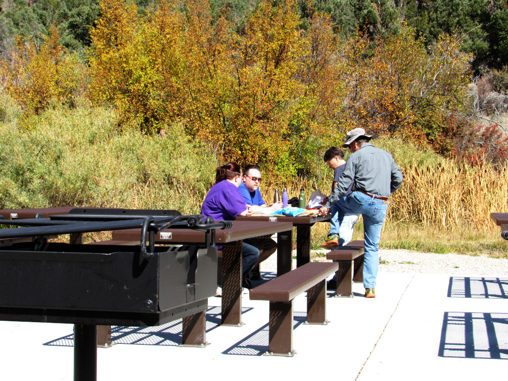

Ely, NV - October 2021
BK Adventures
Ely, NV - October 2021
BK Adventures
Covid has been a real pain in the ass. Mask mandates, travel restrictions and vaccines have kept families apart. As it was, I had not seen my Mom and Tom since the Thanksgiving trip in 2019. So, upon one of our many phone conversations, we decided to take a trip to Nevada, Ely to be specific. We decided to meet in the town of McGill, Nevada, on October 1, 2021
Leaving Salt Lake City around 9:00 AM, after stopping briefly for gas, we headed out of town on the 201 freeway and met up with interstate-80 at the “Great Salt Lake.” The lake was at an all time low, from the interstate, the lake was almost a mile away. Remembering the flooding in the early 80s, when the lake took out the road in the same location. This was a drastic change. Heading past Tooele, towards Wendover, the landscape changes from city to dry desert and eventually to a salted wasteland where nothing grows. Passing the concrete tree in the desert, we headed into Wendover. We filled up on fuel and food before heading to our next location.
Gone was the interstate with its multiple lanes, and onto US 93 Alt South. It's a two-lane highway that moves its way down the eastern part of Nevada, highlighting towns such as Ely, Caliente, Crystal Springs, before terminating at I-15 north of Las Vegas. Not seeing a car for the first twenty miles on US 93, the road curved around hills, climbing and falling. Eventually, the road and landscape flattened out and you could see for miles and miles ahead, nothing but desert with mountains in the background. Traveling for about 2 hours we made it to McGill Nevada.
Meeting up with Yhama and Daideo in McGill, we wandered the main street for about twenty minutes. Main street is small with only a handful of buildings, The McGill Club, The Rexall Drugstore Museum, a closed movie theater (built at the turn of the century), and a post office. Not what you would call a modern metropolis, but a cool little town in the desert. Ambling down main street, Tom pointed out his old haunts, and explained the history of the town he had lived in as a child. Getting back to our vehicles, we drove around for a few minutes before heading out of town.
Backtracking on US 93, we turned off on Highway 486, a dirt road that went behind the mountain from Mcgill to Ely. A few minutes after entering the road, we detoured to a side road that took us to Bird Creek campground. Traveling up the road for about 3 miles we stopped at the camping/picnic area as a herd of deer crossed the road in front of us. A couple of bucks and many does, surprising us as we entered the area. We found a few tables near the creek and made some sandwiches. Kandace and Sarah went exploring the creek.
{kind=link}
{kind=link}